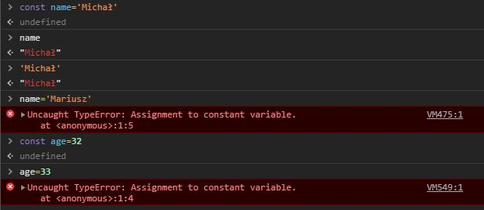
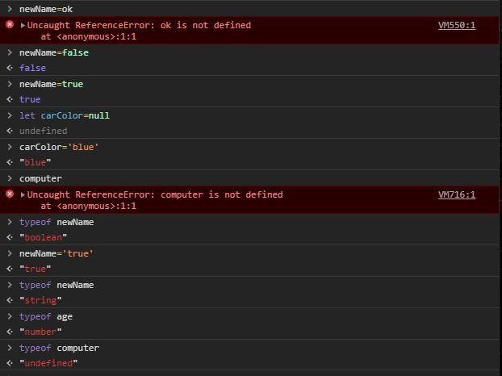
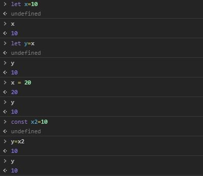

Zmienne w JS. Są 3 sposoby definicji zmiennych: LET, CONST i VAR.
Definiowanie zmiennych w JS to tworzenie połączenia między nazwą a
wartością. Zmienną (jej nazwę) definiujemy tylko raz.
Const - tworzy zmienną, która ma stałe połączenie z jedną wartością.
Możemy pisać kod js w konsoli. W przykładzie podpinamy name pod
wartość Michał. Potem mogę wypisać wartość zmiennej. Próbując
zmienić wartość konsola wyrzuciła błąd. Nie można przepisać
zmiennej, która jest stała(const=constant=stała). Z liczbami jest
tak samo. Zmienna Const pozwala stworzyć stałe wiązanie między nazwą
zmiennej (name, age) a konkretną wartością, i tego połączenia nie
możemy edytować.

let - tworzy zmienną, w której można zmieniać to przypisanie nazwy
do wartości. Nie można utworzyć dwóch zmiennych o tej samej nazwie
(error). Dwie zmienne mogą wskazać na tą samą wartość. To połączenie
można nadpisać(newName='Mariusz'). Edytowano połączenie między nazwą
newName i wartością. Wartość Michał dalej istnieje, nie została
nadpisana. (Przepięto (nie podmieniono) wartość zmiennej z Michała
na Mariusza). To nie musi byc ten sam typ danych. Liczba też
zadziała.
Przy definiowaniu zmiennych nie wskazujemy na to, czy będzie to
napis, czy liczba.
Typy proste w JS:
-String - tekst, oznaczamy '' lub ""(lepiej '')
-Number
-Bigint - duża liczba, większa niż 2^53
-boolean - true lub false
-null - wartość celowo niezdefiniowana
-undefined - brak definicji
-*symbol - tworzy "unikalne opakowanie"
Wpisując true/false dostaniemy rodzaj wartości boolean. Możemy
wpisać null, mp gdy nie wiemy co bedzie w naszej zmiennej. Np
póxniej ustawimy carColor, ale teraz nie wiemy na jaki. Jak wpiszemy
coś czego nie zdefiniowalismy wyskoczy undefined. Wpisując typeof
sprawdzamy, jakiego typu jest zmienna.

Stworzyłem nową zmienną, przypisuję do niej x - w przeglądarce
silnik odpytuje x na co on wskazuje (wartość 10), y tworzy
połączenie do 10. Jeśli zmienimy x y się nie zmieni, bo on w dalszym
ciągu jest połączony z wartością 10, a nie x (x to zmienna, a
zmienna to nie wartość). Operator przypisania nie tworzy nowych
zmiennych, tworzy połączenie i to połączenie nam później zwraca.

Immutability - nie możemy zmieniać wartości primitive values w JS.
To co zmieniamy to połączenie między nimi, a zmiennymi. To co może
się wydawać, że zmieniamy wartość, to tak naprawdę zmieniamy
połączenie między nazwą zmiennej a wartością .